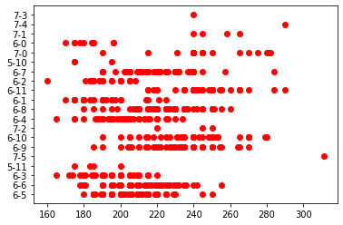
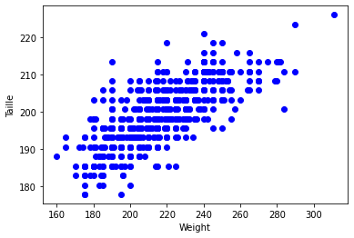
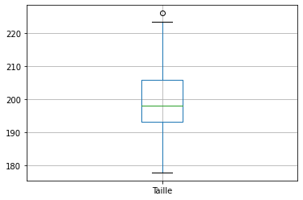
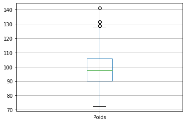

| Thème 3 : Traitement des données |
|---|
| 20 | Manipulation de fichiers CSV avec la bibliothèque Pandas |
|---|
| Contenus | Capacités attendues | Commentaires |
|---|---|---|
| Tri d'une table | Trier une table suivant une colonne | Une fonction de tri intégrée au système ou à une bibliothèque peut être utilisée. |
Le module csv utilisé précédemment se contente de lire les données structurées. Il ne fait aucun effort particulier pour analyser les données. Nous nous en sommes aperçus lorsqu'il a fallu convertir par int() toutes les valeurs numériques, qui étaient interprétées comme des chaînes de caractères.
La bibliothèque pandas est par contre spécialement conçue pour l'analyse des données (data analysis) : elle est donc naturellement bien plus performante.
Nous allons utiliser une base de données sur les joueurs NBA.
import pandas as pd #import du module pandas, abrégé classiquement par "pd"
df = pd.read_csv('data/players.csv', encoding = 'utf-8')
La variable est nommée classiquement df pour dataframe (que l'on peut traduire par table de données)
Premiers renseignements sur les fichiers de données⚓︎
Que contient la variable df?
df
| Name | Position | Team | Age | Height | Height_i | Weight | College | Salary | Points | Rebounds | Assists | |
|---|---|---|---|---|---|---|---|---|---|---|---|---|
| 0 | Juhann Begarin | SG | Boston Celtics | 19 | 6' 5" | 6-5 | 185 | NaN | NaN | NaN | NaN | NaN |
| 1 | Jaylen Brown | SG | Boston Celtics | 24 | 6' 6" | 6-6 | 223 | California | 26758928.0 | 24.7 | 6.0 | 3.4 |
| 2 | Kris Dunn | PG | Boston Celtics | 27 | 6' 3" | 6-3 | 205 | Providence | 5005350.0 | 1.3 | 1.5 | 0.5 |
| 3 | Carsen Edwards | PG | Boston Celtics | 23 | 5' 11" | 5-11 | 200 | Purdue | 1782621.0 | 4.0 | 0.8 | 0.5 |
| 4 | Tacko Fall | C | Boston Celtics | 25 | 7' 5" | 7-5 | 311 | UCF | NaN | 2.5 | 2.7 | 0.2 |
| ... | ... | ... | ... | ... | ... | ... | ... | ... | ... | ... | ... | ... |
| 553 | Juwan Morgan | SF | Utah Jazz | 24 | 6' 7" | 6-7 | 232 | Indiana | NaN | 1.2 | 1.0 | 0.3 |
| 554 | Royce O'Neale | PF | Utah Jazz | 28 | 6' 4" | 6-4 | 226 | Baylor | 8800000.0 | 7.0 | 6.8 | 2.5 |
| 555 | Olumiye Oni | SG | Utah Jazz | 24 | 6' 5" | 6-5 | 206 | Yale | 1782621.0 | NaN | NaN | NaN |
| 556 | Eric Paschall | F | Utah Jazz | 24 | 6' 6" | 6-6 | 255 | Villanova | 1782621.0 | 9.5 | 3.2 | 1.3 |
| 557 | Hassan Whiteside | C | Utah Jazz | 32 | 7' 0" | 7-0 | 265 | Marshall | 1669178.0 | 8.1 | 6.0 | 0.6 |
558 rows × 12 columns
Les données sont présentées dans l'ordre originel du fichier.
➡ Il est possible d'avoir uniquement les premières lignes du fichier avec la commande head() et les dernières du fichier avec la commande tail(). Ces commandes peuvent recevoir en paramètre un nombre entier.
df.head()
| Name | Position | Team | Age | Height | Height_i | Weight | College | Salary | Points | Rebounds | Assists | |
|---|---|---|---|---|---|---|---|---|---|---|---|---|
| 0 | Juhann Begarin | SG | Boston Celtics | 19 | 6' 5" | 6-5 | 185 | NaN | NaN | NaN | NaN | NaN |
| 1 | Jaylen Brown | SG | Boston Celtics | 24 | 6' 6" | 6-6 | 223 | California | 26758928.0 | 24.7 | 6.0 | 3.4 |
| 2 | Kris Dunn | PG | Boston Celtics | 27 | 6' 3" | 6-3 | 205 | Providence | 5005350.0 | 1.3 | 1.5 | 0.5 |
| 3 | Carsen Edwards | PG | Boston Celtics | 23 | 5' 11" | 5-11 | 200 | Purdue | 1782621.0 | 4.0 | 0.8 | 0.5 |
| 4 | Tacko Fall | C | Boston Celtics | 25 | 7' 5" | 7-5 | 311 | UCF | NaN | 2.5 | 2.7 | 0.2 |
df.tail()
| Name | Position | Team | Age | Height | Height_i | Weight | College | Salary | Points | Rebounds | Assists | |
|---|---|---|---|---|---|---|---|---|---|---|---|---|
| 553 | Juwan Morgan | SF | Utah Jazz | 24 | 6' 7" | 6-7 | 232 | Indiana | NaN | 1.2 | 1.0 | 0.3 |
| 554 | Royce O'Neale | PF | Utah Jazz | 28 | 6' 4" | 6-4 | 226 | Baylor | 8800000.0 | 7.0 | 6.8 | 2.5 |
| 555 | Olumiye Oni | SG | Utah Jazz | 24 | 6' 5" | 6-5 | 206 | Yale | 1782621.0 | NaN | NaN | NaN |
| 556 | Eric Paschall | F | Utah Jazz | 24 | 6' 6" | 6-6 | 255 | Villanova | 1782621.0 | 9.5 | 3.2 | 1.3 |
| 557 | Hassan Whiteside | C | Utah Jazz | 32 | 7' 0" | 7-0 | 265 | Marshall | 1669178.0 | 8.1 | 6.0 | 0.6 |
df.head(3)
| Name | Position | Team | Age | Height | Height_i | Weight | College | Salary | Points | Rebounds | Assists | |
|---|---|---|---|---|---|---|---|---|---|---|---|---|
| 0 | Juhann Begarin | SG | Boston Celtics | 19 | 6' 5" | 6-5 | 185 | NaN | NaN | NaN | NaN | NaN |
| 1 | Jaylen Brown | SG | Boston Celtics | 24 | 6' 6" | 6-6 | 223 | California | 26758928.0 | 24.7 | 6.0 | 3.4 |
| 2 | Kris Dunn | PG | Boston Celtics | 27 | 6' 3" | 6-3 | 205 | Providence | 5005350.0 | 1.3 | 1.5 | 0.5 |
df.tail(5)
| Name | Position | Team | Age | Height | Height_i | Weight | College | Salary | Points | Rebounds | Assists | |
|---|---|---|---|---|---|---|---|---|---|---|---|---|
| 553 | Juwan Morgan | SF | Utah Jazz | 24 | 6' 7" | 6-7 | 232 | Indiana | NaN | 1.2 | 1.0 | 0.3 |
| 554 | Royce O'Neale | PF | Utah Jazz | 28 | 6' 4" | 6-4 | 226 | Baylor | 8800000.0 | 7.0 | 6.8 | 2.5 |
| 555 | Olumiye Oni | SG | Utah Jazz | 24 | 6' 5" | 6-5 | 206 | Yale | 1782621.0 | NaN | NaN | NaN |
| 556 | Eric Paschall | F | Utah Jazz | 24 | 6' 6" | 6-6 | 255 | Villanova | 1782621.0 | 9.5 | 3.2 | 1.3 |
| 557 | Hassan Whiteside | C | Utah Jazz | 32 | 7' 0" | 7-0 | 265 | Marshall | 1669178.0 | 8.1 | 6.0 | 0.6 |
➡ Pour avoir des renseignements globaux sur la structure de notre fichier, on peut utiliser la commande df.info()
df.info()
<class 'pandas.core.frame.DataFrame'>
RangeIndex: 558 entries, 0 to 557
Data columns (total 12 columns):
# Column Non-Null Count Dtype
--- ------ -------------- -----
0 Name 558 non-null object
1 Position 558 non-null object
2 Team 558 non-null object
3 Age 558 non-null int64
4 Height 558 non-null object
5 Height_i 558 non-null object
6 Weight 558 non-null int64
7 College 485 non-null object
8 Salary 445 non-null float64
9 Points 476 non-null float64
10 Rebounds 476 non-null float64
11 Assists 476 non-null float64
dtypes: float64(4), int64(2), object(6)
memory usage: 52.4+ KB
Extraction de colonnes⚓︎
Pour accéder aux information d'une colonne⚓︎
Filter les lignes en appliquant une condition aux colonnes à l'aide de .loc⚓︎
➡ Pour faire afficher une colonne de données :
df.loc[:,"Salary"]
0 NaN
1 26758928.0
2 5005350.0
3 1782621.0
4 NaN
...
553 NaN
554 8800000.0
555 1782621.0
556 1782621.0
557 1669178.0
Name: Salary, Length: 558, dtype: float64
➡ On peut rajouter une contrainte avec, par exemple; uniquement les 10 premiers de la liste
df.loc[:10,"Salary"] # les 10 premiers salaires dans la liste
0 NaN
1 26758928.0
2 5005350.0
3 1782621.0
4 NaN
5 1782621.0
6 27000000.0
7 1669178.0
8 NaN
9 3804360.0
10 3631200.0
Name: Salary, dtype: float64
df.loc[:10] # les 10 premiers dans la liste
| Name | Position | Team | Age | Height | Height_i | Weight | College | Salary | Points | Rebounds | Assists | |
|---|---|---|---|---|---|---|---|---|---|---|---|---|
| 0 | Juhann Begarin | SG | Boston Celtics | 19 | 6' 5" | 6-5 | 185 | NaN | NaN | NaN | NaN | NaN |
| 1 | Jaylen Brown | SG | Boston Celtics | 24 | 6' 6" | 6-6 | 223 | California | 26758928.0 | 24.7 | 6.0 | 3.4 |
| 2 | Kris Dunn | PG | Boston Celtics | 27 | 6' 3" | 6-3 | 205 | Providence | 5005350.0 | 1.3 | 1.5 | 0.5 |
| 3 | Carsen Edwards | PG | Boston Celtics | 23 | 5' 11" | 5-11 | 200 | Purdue | 1782621.0 | 4.0 | 0.8 | 0.5 |
| 4 | Tacko Fall | C | Boston Celtics | 25 | 7' 5" | 7-5 | 311 | UCF | NaN | 2.5 | 2.7 | 0.2 |
| 5 | Bruno Fernando | F | Boston Celtics | 23 | 6' 9" | 6-9 | 240 | Maryland | 1782621.0 | 1.5 | 2.4 | 0.3 |
| 6 | Al Horford | C | Boston Celtics | 35 | 6' 9" | 6-9 | 240 | Florida | 27000000.0 | 14.2 | 6.7 | 3.4 |
| 7 | Enes Kanter | C | Boston Celtics | 29 | 6' 10" | 6-10 | 250 | Kentucky | 1669178.0 | 11.2 | 11.0 | 1.2 |
| 8 | Luke Kornet | C | Boston Celtics | 26 | 7' 2" | 7-2 | 250 | Vanderbilt | NaN | 3.4 | 2.2 | 0.8 |
| 9 | Romeo Langford | SG | Boston Celtics | 21 | 6' 4" | 6-4 | 216 | Indiana | 3804360.0 | 3.1 | 1.9 | 0.7 |
| 10 | Aaron Nesmith | SF | Boston Celtics | 21 | 6' 5" | 6-5 | 215 | Vanderbilt | 3631200.0 | 4.7 | 2.8 | 0.5 |
🖋 A vous
Faite apparaitre la colonne correspondant au âge des joueurs, puis faite apparaitre les 15 premiers de la liste.
df.loc[:,"Age"] # les 15 premiers dans la liste
0 19
1 24
2 27
3 23
4 25
..
553 24
554 28
555 24
556 24
557 32
Name: Age, Length: 558, dtype: int64
df.loc[:15,["Age",'Name']] # les 15 premiers dans la liste
| Age | Name | |
|---|---|---|
| 0 | 19 | Juhann Begarin |
| 1 | 24 | Jaylen Brown |
| 2 | 27 | Kris Dunn |
| 3 | 23 | Carsen Edwards |
| 4 | 25 | Tacko Fall |
| 5 | 23 | Bruno Fernando |
| 6 | 35 | Al Horford |
| 7 | 29 | Enes Kanter |
| 8 | 26 | Luke Kornet |
| 9 | 21 | Romeo Langford |
| 10 | 21 | Aaron Nesmith |
| 11 | 26 | Jabari Parker |
| 12 | 23 | Payton Pritchard |
| 13 | 27 | Josh Richardson |
| 14 | 27 | Dennis Schroder |
| 15 | 27 | Marcus Smart |
➡ Pour accéder à une fiche particulière de joueur avec sa position, on peut utiliser la fonction loc() :
test1=df.loc[45,['Name','Position']]
test1
Name RJ Barrett
Position SG
Name: 45, dtype: object
Extraire des informations selon des critères loc()⚓︎
➡ Cette méthode nécessite de savoir la position du joueur voulu, pour accéder à un joueur avec son nom :
df.loc[df['Name']=='Kevin Durant'] # ou df.loc[df.Name=='Kevin Durant']
| Name | Position | Team | Age | Height | Height_i | Weight | College | Salary | Points | Rebounds | Assists | |
|---|---|---|---|---|---|---|---|---|---|---|---|---|
| 25 | Kevin Durant | PF | Brooklyn Nets | 32 | 6' 10" | 6-10 | 240 | Texas | 42018900.0 | 26.9 | 7.1 | 5.6 |
➡ Pour accéder à des données avec une contrainte (Joueurs touchant plus de 40 millions de dollars par an):
df.loc[df['Salary']>=40000000] # ou df.loc[df.Salary>=40000000]
| Name | Position | Team | Age | Height | Height_i | Weight | College | Salary | Points | Rebounds | Assists | |
|---|---|---|---|---|---|---|---|---|---|---|---|---|
| 25 | Kevin Durant | PF | Brooklyn Nets | 32 | 6' 10" | 6-10 | 240 | Texas | 42018900.0 | 26.9 | 7.1 | 5.6 |
| 29 | James Harden | SG | Brooklyn Nets | 32 | 6' 5" | 6-5 | 220 | Arizona State | 44310840.0 | 24.6 | 7.9 | 10.8 |
| 287 | Stephen Curry | PG | Golden State Warriors | 33 | 6' 3" | 6-3 | 185 | Davidson | 45780966.0 | 32.0 | 5.5 | 5.8 |
| 331 | LeBron James | SF | Los Angeles Lakers | 36 | 6' 9" | 6-9 | 250 | NaN | 41180544.0 | 25.0 | 7.7 | 7.8 |
| 336 | Russell Westbrook | PG | Los Angeles Lakers | 32 | 6' 3" | 6-3 | 200 | UCLA | 44211146.0 | 22.2 | 11.5 | 11.7 |
| 408 | John Wall | PG | Houston Rockets | 31 | 6' 3" | 6-3 | 210 | Kentucky | 44310840.0 | 20.6 | 3.2 | 6.9 |
df.loc[df.Salary>=40000000]
| Name | Position | Team | Age | Height | Height_i | Weight | College | Salary | Points | Rebounds | Assists | |
|---|---|---|---|---|---|---|---|---|---|---|---|---|
| 25 | Kevin Durant | PF | Brooklyn Nets | 32 | 6' 10" | 6-10 | 240 | Texas | 42018900.0 | 26.9 | 7.1 | 5.6 |
| 29 | James Harden | SG | Brooklyn Nets | 32 | 6' 5" | 6-5 | 220 | Arizona State | 44310840.0 | 24.6 | 7.9 | 10.8 |
| 287 | Stephen Curry | PG | Golden State Warriors | 33 | 6' 3" | 6-3 | 185 | Davidson | 45780966.0 | 32.0 | 5.5 | 5.8 |
| 331 | LeBron James | SF | Los Angeles Lakers | 36 | 6' 9" | 6-9 | 250 | NaN | 41180544.0 | 25.0 | 7.7 | 7.8 |
| 336 | Russell Westbrook | PG | Los Angeles Lakers | 32 | 6' 3" | 6-3 | 200 | UCLA | 44211146.0 | 22.2 | 11.5 | 11.7 |
| 408 | John Wall | PG | Houston Rockets | 31 | 6' 3" | 6-3 | 210 | Kentucky | 44310840.0 | 20.6 | 3.2 | 6.9 |
🖋 A vous
Donner les joueurs marquant plus de 25 points par match.
df.loc[df['Points']>=25]
| Name | Position | Team | Age | Height | Height_i | Weight | College | Salary | Points | Rebounds | Assists | |
|---|---|---|---|---|---|---|---|---|---|---|---|---|
| 16 | Jayson Tatum | SF | Boston Celtics | 23 | 6' 8" | 6-8 | 210 | Duke | 28103500.0 | 26.4 | 7.4 | 4.3 |
| 25 | Kevin Durant | PF | Brooklyn Nets | 32 | 6' 10" | 6-10 | 240 | Texas | 42018900.0 | 26.9 | 7.1 | 5.6 |
| 31 | Kyrie Irving | PG | Brooklyn Nets | 29 | 6' 2" | 6-2 | 195 | Duke | 35328700.0 | 26.9 | 4.8 | 6.0 |
| 69 | Joel Embiid | C | Philadelphia Sixers | 27 | 7' 0" | 7-0 | 280 | Kansas | 31579390.0 | 28.5 | 10.6 | 2.8 |
| 113 | Zach LaVine | SG | Chicago Bulls | 26 | 6' 5" | 6-5 | 200 | UCLA | 19500000.0 | 27.4 | 5.0 | 4.9 |
| 171 | Giannis Antetokounmpo | PF | Milwaukee Bucks | 26 | 6' 11" | 6-11 | 242 | NaN | 39344970.0 | 28.1 | 11.0 | 5.9 |
| 206 | Trae Young | PG | Atlanta Hawks | 22 | 6' 1" | 6-1 | 180 | Oklahoma | 8326471.0 | 25.3 | 3.9 | 9.4 |
| 267 | Bradley Beal | SG | Washington Wizards | 28 | 6' 3" | 6-3 | 207 | Florida | 33724200.0 | 31.3 | 4.7 | 4.4 |
| 287 | Stephen Curry | PG | Golden State Warriors | 33 | 6' 3" | 6-3 | 185 | Davidson | 45780966.0 | 32.0 | 5.5 | 5.8 |
| 331 | LeBron James | SF | Los Angeles Lakers | 36 | 6' 9" | 6-9 | 250 | NaN | 41180544.0 | 25.0 | 7.7 | 7.8 |
| 338 | Devin Booker | SG | Phoenix Suns | 24 | 6' 5" | 6-5 | 206 | Kentucky | 31650600.0 | 25.6 | 4.2 | 4.3 |
| 357 | De'Aaron Fox | PG | Sacremento Kings | 23 | 6' 3" | 6-3 | 185 | Kentucky | 28103550.0 | 25.2 | 3.5 | 7.2 |
| 378 | Luka Doncic | PG | Dallas Mavericks | 22 | 6' 7" | 6-7 | 230 | NaN | 10174391.0 | 27.7 | 8.0 | 8.6 |
| 449 | Zion Williamson | PF | New Orleans Pelicans | 21 | 6' 7" | 6-7 | 284 | Duke | 10733400.0 | 27.0 | 7.2 | 3.7 |
| 480 | Nikola Jokic | C | Denver Nuggets | 26 | 6' 11" | 6-11 | 284 | NaN | 31579390.0 | 26.4 | 10.8 | 8.3 |
| 529 | Damian Lillard | PG | Portland Trail Blazers | 31 | 6' 2" | 6-2 | 195 | Weber State | 39344900.0 | 28.8 | 4.2 | 7.5 |
| 552 | Donovan Mitchell | SG | Utah Jazz | 25 | 6' 1" | 6-1 | 215 | Louisville | 28103500.0 | 26.4 | 4.4 | 5.2 |
df.loc[df.Points>=25]
| Name | Position | Team | Age | Height | Height_i | Weight | College | Salary | Points | Rebounds | Assists | |
|---|---|---|---|---|---|---|---|---|---|---|---|---|
| 16 | Jayson Tatum | SF | Boston Celtics | 23 | 6' 8" | 6-8 | 210 | Duke | 28103500.0 | 26.4 | 7.4 | 4.3 |
| 25 | Kevin Durant | PF | Brooklyn Nets | 32 | 6' 10" | 6-10 | 240 | Texas | 42018900.0 | 26.9 | 7.1 | 5.6 |
| 31 | Kyrie Irving | PG | Brooklyn Nets | 29 | 6' 2" | 6-2 | 195 | Duke | 35328700.0 | 26.9 | 4.8 | 6.0 |
| 69 | Joel Embiid | C | Philadelphia Sixers | 27 | 7' 0" | 7-0 | 280 | Kansas | 31579390.0 | 28.5 | 10.6 | 2.8 |
| 113 | Zach LaVine | SG | Chicago Bulls | 26 | 6' 5" | 6-5 | 200 | UCLA | 19500000.0 | 27.4 | 5.0 | 4.9 |
| 171 | Giannis Antetokounmpo | PF | Milwaukee Bucks | 26 | 6' 11" | 6-11 | 242 | NaN | 39344970.0 | 28.1 | 11.0 | 5.9 |
| 206 | Trae Young | PG | Atlanta Hawks | 22 | 6' 1" | 6-1 | 180 | Oklahoma | 8326471.0 | 25.3 | 3.9 | 9.4 |
| 267 | Bradley Beal | SG | Washington Wizards | 28 | 6' 3" | 6-3 | 207 | Florida | 33724200.0 | 31.3 | 4.7 | 4.4 |
| 287 | Stephen Curry | PG | Golden State Warriors | 33 | 6' 3" | 6-3 | 185 | Davidson | 45780966.0 | 32.0 | 5.5 | 5.8 |
| 331 | LeBron James | SF | Los Angeles Lakers | 36 | 6' 9" | 6-9 | 250 | NaN | 41180544.0 | 25.0 | 7.7 | 7.8 |
| 338 | Devin Booker | SG | Phoenix Suns | 24 | 6' 5" | 6-5 | 206 | Kentucky | 31650600.0 | 25.6 | 4.2 | 4.3 |
| 357 | De'Aaron Fox | PG | Sacremento Kings | 23 | 6' 3" | 6-3 | 185 | Kentucky | 28103550.0 | 25.2 | 3.5 | 7.2 |
| 378 | Luka Doncic | PG | Dallas Mavericks | 22 | 6' 7" | 6-7 | 230 | NaN | 10174391.0 | 27.7 | 8.0 | 8.6 |
| 449 | Zion Williamson | PF | New Orleans Pelicans | 21 | 6' 7" | 6-7 | 284 | Duke | 10733400.0 | 27.0 | 7.2 | 3.7 |
| 480 | Nikola Jokic | C | Denver Nuggets | 26 | 6' 11" | 6-11 | 284 | NaN | 31579390.0 | 26.4 | 10.8 | 8.3 |
| 529 | Damian Lillard | PG | Portland Trail Blazers | 31 | 6' 2" | 6-2 | 195 | Weber State | 39344900.0 | 28.8 | 4.2 | 7.5 |
| 552 | Donovan Mitchell | SG | Utah Jazz | 25 | 6' 1" | 6-1 | 215 | Louisville | 28103500.0 | 26.4 | 4.4 | 5.2 |
🖋 A vous
Donner les joueurs provenant du collège du Kentuchy.
df.loc[df.College=='Kentucky']
| Name | Position | Team | Age | Height | Height_i | Weight | College | Salary | Points | Rebounds | Assists | |
|---|---|---|---|---|---|---|---|---|---|---|---|---|
| 7 | Enes Kanter | C | Boston Celtics | 29 | 6' 10" | 6-10 | 250 | Kentucky | 1669178.0 | 11.2 | 11.0 | 1.2 |
| 51 | Kevin Knox II | SF | New York Knicks | 22 | 6' 7" | 6-7 | 215 | Kentucky | 5845979.0 | 3.9 | 1.5 | 0.5 |
| 53 | Nerlens Noel | C | New York Knicks | 27 | 6' 11" | 6-11 | 220 | Kentucky | 8000000.0 | 5.1 | 6.4 | 0.7 |
| 57 | Immanuel Quickley | SG | New York Knicks | 22 | 6' 3" | 6-3 | 190 | Kentucky | 2210640.0 | 11.4 | 2.1 | 2.0 |
| 58 | Julius Randle | PF | New York Knicks | 26 | 6' 8" | 6-8 | 250 | Kentucky | 21780000.0 | 24.1 | 10.2 | 6.0 |
| 75 | Tyrese Maxey | PG | Philadelphia Sixers | 20 | 6' 2" | 6-2 | 200 | Kentucky | 2602920.0 | 8.0 | 1.7 | 2.0 |
| 136 | Hamidou Diallo | SG | Detroit Pistons | 23 | 6' 5" | 6-5 | 202 | Kentucky | 5200000.0 | 11.6 | 5.2 | 1.9 |
| 146 | Trey Lyles | PF | Detroit Pistons | 25 | 6' 9" | 6-9 | 234 | Kentucky | 2500000.0 | 5.0 | 3.7 | 0.6 |
| 158 | Isaiah Jackson | PF | Indiana Pacers | 19 | 6' 10" | 6-10 | 205 | Kentucky | 2451240.0 | NaN | NaN | NaN |
| 222 | Nick Richards | C | Charlotte Hornets | 23 | 7' 0" | 7-0 | 245 | Kentucky | 1517981.0 | 0.8 | 0.6 | 0.1 |
| 227 | P.J. Washington | PF | Charlotte Hornets | 23 | 6' 7" | 6-7 | 230 | Kentucky | 4215120.0 | 12.9 | 6.5 | 2.5 |
| 228 | Bam Adebayo | C | Miami Heat | 24 | 6' 9" | 6-9 | 255 | Kentucky | 28103500.0 | 18.7 | 9.0 | 5.4 |
| 233 | Tyler Herro | PG | Miami Heat | 21 | 6' 5" | 6-5 | 195 | Kentucky | 4004280.0 | 15.1 | 5.0 | 3.4 |
| 295 | Mychal Mulder | SG | Golden State Warriors | 27 | 6' 3" | 6-3 | 184 | Kentucky | 1782621.0 | 5.6 | 1.0 | 0.4 |
| 304 | Eric Bledsoe | SG | Los Angeles Clippers | 31 | 6' 1" | 6-1 | 214 | Kentucky | 18125000.0 | 12.2 | 3.4 | 3.8 |
| 306 | DeMarcus Cousins | C | Los Angeles Clippers | 31 | 6' 10" | 6-10 | 270 | Kentucky | NaN | 8.9 | 6.4 | 1.9 |
| 316 | Patrick Patterson | PF | Los Angeles Clippers | 32 | 6' 8" | 6-8 | 235 | Kentucky | NaN | 5.2 | 2.0 | 0.8 |
| 326 | Anthony Davis | PF | Los Angeles Lakers | 28 | 6' 10" | 6-10 | 253 | Kentucky | 35361360.0 | 21.8 | 7.9 | 3.1 |
| 333 | Malik Monk | SG | Los Angeles Lakers | 23 | 6' 3" | 6-3 | 200 | Kentucky | 1669178.0 | 11.7 | 2.4 | 2.1 |
| 335 | Rajon Rondo | PG | Los Angeles Lakers | 35 | 6' 1" | 6-1 | 180 | Kentucky | 1669178.0 | 5.4 | 2.4 | 4.4 |
| 338 | Devin Booker | SG | Phoenix Suns | 24 | 6' 5" | 6-5 | 206 | Kentucky | 31650600.0 | 25.6 | 4.2 | 4.3 |
| 357 | De'Aaron Fox | PG | Sacremento Kings | 23 | 6' 3" | 6-3 | 185 | Kentucky | 28103550.0 | 25.2 | 3.5 | 7.2 |
| 377 | Willie Cauley-Stein | C | Dallas Mavericks | 28 | 7' 0" | 7-0 | 240 | Kentucky | 4100000.0 | 5.3 | 4.5 | 0.7 |
| 408 | John Wall | PG | Houston Rockets | 31 | 6' 3" | 6-3 | 210 | Kentucky | 44310840.0 | 20.6 | 3.2 | 6.9 |
| 434 | Wenyen Gabriel | PF | New Orleans Pelicans | 24 | 6' 9" | 6-9 | 205 | Kentucky | 1762796.0 | 3.4 | 2.6 | 0.5 |
| 456 | Keldon Johnson | SF | San Antonio Spurs | 21 | 6' 5" | 6-5 | 220 | Kentucky | 2145720.0 | 12.8 | 6.0 | 1.8 |
| 482 | Jamal Murray | PG | Denver Nuggets | 24 | 6' 3" | 6-3 | 215 | Kentucky | 29467800.0 | 21.2 | 4.0 | 4.8 |
| 499 | Karl-Anthony Towns | C | Minnesota Timberwolves | 25 | 6' 11" | 6-11 | 248 | Kentucky | 31650600.0 | 24.8 | 10.6 | 4.5 |
| 500 | Jarred Vanderbilt | PF | Minnesota Timberwolves | 22 | 6' 9" | 6-9 | 214 | Kentucky | NaN | 5.4 | 5.8 | 1.2 |
| 508 | Shai Gilgeous-Alexander | SG | Oklahoma City Thunder | 23 | 6' 6" | 6-6 | 180 | Kentucky | 5495532.0 | 23.7 | 4.7 | 5.9 |
Opération classique : Moyenne, maximum et minimum⚓︎
➡ On peut calculer la moyenne des salaires :
df["Salary"].mean() # ou df.Salary.mean()
8813695.5752809
➡ le maximum
df["Salary"].max()
45780966.0
➡ le minimum
df["Salary"].min()
925258.0
Filtrer les lignes avec des indices en utilisant iloc⚓︎
➡ On peut également faire afficher le salaire max et le nom du joueur correspondant :
result = df[df["Salary"].max() == df["Salary"]][["Name","Points","Age",'Salary']].iloc[0] # 0 signifie qu'on affiche le premier joueur correspondant à la condition
print(result)
Name Stephen Curry
Points 32.0
Age 33
Salary 45780966.0
Name: 287, dtype: object
🖋 A vous
Faire afficher uniquement le nom des joueurs gagnant plus de 40 millions de dollars par saison.
df[df["Salary"]>40000000]["Name"].iloc[:]
25 Kevin Durant
29 James Harden
287 Stephen Curry
331 LeBron James
336 Russell Westbrook
408 John Wall
Name: Name, dtype: object
🖋 A vous
Faites de même pour faire apparaitre le nom du joueur ayant le salaire minimum.
result = df[df["Salary"].min() == df["Salary"]]["Name"].iloc[0] # 0 signifie qu'on affiche le premier joueur correspondant à la condition
result
'Miles McBride'
🖋 A vous
Faire apparaitre le poste et le club de Kemba Walker
df[df["Name"] == "Kemba Walker"][["Name",'Team']].iloc[0]
Name Kemba Walker
Team New York Knicks
Name: 64, dtype: object
🖋 A vous
Faire apparaitre le plus grand joueur
df[df["Height"].max() == df["Height"]][["Name","Height"]].iloc[:] # 0 signifie qu'on affiche le premier joueur correspondant à la condition
| Name | Height | |
|---|---|---|
| 4 | Tacko Fall | 7' 5" |
🖋 A vous
Faire apparaitre le plus petit joueur
df[df["Height"].min() == df["Height"]][["Name","Height"]].iloc[:] # 0 signifie qu'on affiche le premier joueur correspondant à la condition
| Name | Height | |
|---|---|---|
| 50 | Jared Harper | 5' 10" |
| 471 | Facundo Campazzo | 5' 10" |
| 478 | Markus Howard | 5' 10" |
🖋 A vous
Faire apparaitre le meilleur rebondeur
df[df["Rebounds"].max() == df["Rebounds"]][["Name","Rebounds",'Salary']].iloc[:] # 0 signifie qu'on affiche le premier joueur correspondant à la condition
| Name | Rebounds | Salary | |
|---|---|---|---|
| 191 | Clint Capela | 14.3 | 18603448.0 |
🖋 A vous
Donner le nom du meilleur marqueur ainsi que sa moyenne de points
df[df["Points"].max() == df["Points"]][["Name","Points"]].iloc[:] # 0 signifie qu'on affiche le premier joueur correspondant à la condition
| Name | Points | |
|---|---|---|
| 287 | Stephen Curry | 32.0 |
🖋 A vous
Donner les joueurs des Brooklyn Nets
df[df["Team"] == "Brooklyn Nets"][["Team","Name","Salary",'Points','Rebounds','Assists']].iloc[:]
| Team | Name | Salary | Points | Rebounds | Assists | |
|---|---|---|---|---|---|---|
| 19 | Brooklyn Nets | LaMarcus Aldridge | NaN | 13.5 | 4.5 | 1.9 |
| 20 | Brooklyn Nets | DeAndre' Bembry | 1669178.0 | 5.7 | 2.9 | 2.1 |
| 21 | Brooklyn Nets | Bruce Brown | 4736102.0 | 8.8 | 5.4 | 1.6 |
| 22 | Brooklyn Nets | Jevon Carter | 3650000.0 | 4.1 | 1.5 | 1.2 |
| 23 | Brooklyn Nets | Nicolas Claxton | 1782621.0 | 6.6 | 5.2 | 0.9 |
| 24 | Brooklyn Nets | Sekou Doumbouya | 3613680.0 | 5.1 | 2.6 | 0.8 |
| 25 | Brooklyn Nets | Kevin Durant | 42018900.0 | 26.9 | 7.1 | 5.6 |
| 26 | Brooklyn Nets | Kessler Edwards | NaN | NaN | NaN | NaN |
| 27 | Brooklyn Nets | RaiQuan Gray | NaN | NaN | NaN | NaN |
| 28 | Brooklyn Nets | Blake Griffin | 1669178.0 | 11.0 | 4.9 | 3.0 |
| 29 | Brooklyn Nets | James Harden | 44310840.0 | 24.6 | 7.9 | 10.8 |
| 30 | Brooklyn Nets | Joe Harris | 17357143.0 | 14.1 | 3.6 | 1.9 |
| 31 | Brooklyn Nets | Kyrie Irving | 35328700.0 | 26.9 | 4.8 | 6.0 |
| 32 | Brooklyn Nets | Mike James | NaN | 7.7 | 2.5 | 4.2 |
| 33 | Brooklyn Nets | Alize Johnson | 1762796.0 | 5.2 | 5.0 | 0.8 |
| 34 | Brooklyn Nets | James Johnson | 1669178.0 | 7.2 | 3.5 | 1.9 |
| 35 | Brooklyn Nets | Tyler Johnson | NaN | 5.4 | 2.0 | 1.2 |
| 36 | Brooklyn Nets | Timothe Luwawu-Cabarrot | NaN | 6.4 | 2.2 | 1.2 |
| 37 | Brooklyn Nets | Patty Mills | 5890000.0 | 10.8 | 1.7 | 2.4 |
| 38 | Brooklyn Nets | Paul Millsap | NaN | 9.0 | 4.7 | 1.8 |
| 39 | Brooklyn Nets | Jahlil Okafor | 2130023.0 | 5.4 | 2.4 | 0.5 |
| 40 | Brooklyn Nets | Reggie Perry | NaN | 3.0 | 2.8 | 0.5 |
| 41 | Brooklyn Nets | Day'Ron Sharpe | 2009040.0 | NaN | NaN | NaN |
| 42 | Brooklyn Nets | Cameron Thomas | 2036280.0 | NaN | NaN | NaN |
| 43 | Brooklyn Nets | Marcus Zegarowski | NaN | NaN | NaN | NaN |
➡ On peut regrouper les informations selon un critère
position_mean = df.groupby(["Position"]).mean()
result = position_mean[["Salary","Age","Points"]]
result = result.round(2)
print(result)
Salary Age Points
Position
C 8456428.80 26.02 9.44
F 2560251.89 24.75 5.57
G 8980619.71 24.93 8.62
PF 8111010.82 25.72 8.54
PG 11215125.14 25.74 11.04
SF 8850135.80 25.72 9.60
SG 8193987.70 24.99 10.23
🖋 A vous
Regrouper les joueurs en fonction de leur age : donner Salaires, points, rebond, assist
age_mean = df.groupby(["Age"]).mean()
result = age_mean[["Salary","Points","Rebounds","Assists"]]
result = result.round(2)
print(result)
Salary Points Rebounds Assists
Age
18 4356240.00 NaN NaN NaN
19 3491814.67 8.20 4.70 2.20
20 4223284.71 7.21 3.17 1.74
21 3406872.79 8.25 3.35 1.65
22 4192325.67 9.10 3.25 1.82
23 6774844.88 8.78 3.71 1.73
24 7277468.36 8.63 3.19 1.60
25 8694282.25 8.58 3.55 1.95
26 11202414.08 10.50 4.34 2.26
27 10732572.84 11.47 4.47 2.52
28 8559695.57 9.56 4.08 1.72
29 13234492.09 11.36 4.54 2.53
30 12910878.62 10.27 4.48 2.46
31 23352115.06 13.32 4.71 3.90
32 16003671.33 12.35 4.54 3.26
33 12974515.94 10.61 3.74 2.54
34 5556392.67 7.32 2.54 1.62
35 10663609.33 10.66 4.43 3.11
36 14575452.17 10.92 4.98 3.29
37 1669178.00 8.40 2.70 1.67
41 1669178.00 4.00 1.00 0.00
Création de graphique⚓︎
import matplotlib.pyplot as plt
plt.close()
X = df['Weight']
Y = df['Height_i']
plt.plot(X,Y,'ro') # r pour red, o pour un cercle. voir https://matplotlib.org/api/markers_api.html
plt.show()

Rajout d'une colonne⚓︎
➡ Afin de pouvoir trier les joueurs suivant de nouveaux critères, nous allons rajouter un champ pour chaque joueur.
Prenons un exemple stupide : fabriquons un nouveau champ 'Taille en cm' qui contiendra la taille des joueurs aprés conversion en cm.
Ceci se fera simplement par :
conversions = [30.48, 2.54]
df['Taille'] = df['Height_i'].str.split('-').apply(pd.Series).astype(int).dot(conversions)
df
| Name | Position | Team | Age | Height | Height_i | Weight | College | Salary | Points | Rebounds | Assists | Taille | |
|---|---|---|---|---|---|---|---|---|---|---|---|---|---|
| 0 | Juhann Begarin | SG | Boston Celtics | 19 | 6' 5" | 6-5 | 185 | NaN | NaN | NaN | NaN | NaN | 195.58 |
| 1 | Jaylen Brown | SG | Boston Celtics | 24 | 6' 6" | 6-6 | 223 | California | 26758928.0 | 24.7 | 6.0 | 3.4 | 198.12 |
| 2 | Kris Dunn | PG | Boston Celtics | 27 | 6' 3" | 6-3 | 205 | Providence | 5005350.0 | 1.3 | 1.5 | 0.5 | 190.50 |
| 3 | Carsen Edwards | PG | Boston Celtics | 23 | 5' 11" | 5-11 | 200 | Purdue | 1782621.0 | 4.0 | 0.8 | 0.5 | 180.34 |
| 4 | Tacko Fall | C | Boston Celtics | 25 | 7' 5" | 7-5 | 311 | UCF | NaN | 2.5 | 2.7 | 0.2 | 226.06 |
| ... | ... | ... | ... | ... | ... | ... | ... | ... | ... | ... | ... | ... | ... |
| 553 | Juwan Morgan | SF | Utah Jazz | 24 | 6' 7" | 6-7 | 232 | Indiana | NaN | 1.2 | 1.0 | 0.3 | 200.66 |
| 554 | Royce O'Neale | PF | Utah Jazz | 28 | 6' 4" | 6-4 | 226 | Baylor | 8800000.0 | 7.0 | 6.8 | 2.5 | 193.04 |
| 555 | Olumiye Oni | SG | Utah Jazz | 24 | 6' 5" | 6-5 | 206 | Yale | 1782621.0 | NaN | NaN | NaN | 195.58 |
| 556 | Eric Paschall | F | Utah Jazz | 24 | 6' 6" | 6-6 | 255 | Villanova | 1782621.0 | 9.5 | 3.2 | 1.3 | 198.12 |
| 557 | Hassan Whiteside | C | Utah Jazz | 32 | 7' 0" | 7-0 | 265 | Marshall | 1669178.0 | 8.1 | 6.0 | 0.6 | 213.36 |
558 rows × 13 columns
import matplotlib.pyplot as plt
plt.close()
X = df['Weight']
Y = df['Taille']
plt.plot(X,Y,'bo') # r pour red, o pour un cercle. voir https://matplotlib.org/api/markers_api.html
plt.xlabel('Weight')
plt.ylabel("Taille")
plt.show()

➡ L'interprétation numérique permet à pandas d'analyser automatiquement les données, avec notamment la fonction describe().
df['Taille'].describe()
count 558.000000
mean 199.153297
std 8.334137
min 177.800000
25% 193.040000
50% 198.120000
75% 205.740000
max 226.060000
Name: Taille, dtype: float64
plt.close()
b=df.boxplot(column=['Taille'])
b.plot()
plt.show()

🖋 A vous
Déterminer la taille moyenne d'un joueur NBA
df['Taille'].mean()
199.15329749103944
🖋 A vous
Déterminer les plus petits joueurs NBA ainsi que leurs moyennes de points
df[df["Taille"].min()==df['Taille']][['Name','Taille','Points']].iloc[:]
| Name | Taille | Points | |
|---|---|---|---|
| 50 | Jared Harper | 177.8 | 0.4 |
| 471 | Facundo Campazzo | 177.8 | 6.1 |
| 478 | Markus Howard | 177.8 | 2.8 |
df[df['Name']=='Jared Harper']
| Name | Position | Team | Age | Height | Height_i | Weight | College | Salary | Points | Rebounds | Assists | Taille | |
|---|---|---|---|---|---|---|---|---|---|---|---|---|---|
| 50 | Jared Harper | PG | New York Knicks | 23 | 5' 10" | 5-10 | 175 | Auburn | NaN | 0.4 | 0.3 | 0.1 | 177.8 |
🖋 A vous
Convertir le poid en kg.
df['Poids']=df['Weight']/2.2046
df
| Name | Position | Team | Age | Height | Height_i | Weight | College | Salary | Points | Rebounds | Assists | Taille | Poids | |
|---|---|---|---|---|---|---|---|---|---|---|---|---|---|---|
| 0 | Juhann Begarin | SG | Boston Celtics | 19 | 6' 5" | 6-5 | 185 | NaN | NaN | NaN | NaN | NaN | 195.58 | 83.915450 |
| 1 | Jaylen Brown | SG | Boston Celtics | 24 | 6' 6" | 6-6 | 223 | California | 26758928.0 | 24.7 | 6.0 | 3.4 | 198.12 | 101.152136 |
| 2 | Kris Dunn | PG | Boston Celtics | 27 | 6' 3" | 6-3 | 205 | Providence | 5005350.0 | 1.3 | 1.5 | 0.5 | 190.50 | 92.987390 |
| 3 | Carsen Edwards | PG | Boston Celtics | 23 | 5' 11" | 5-11 | 200 | Purdue | 1782621.0 | 4.0 | 0.8 | 0.5 | 180.34 | 90.719405 |
| 4 | Tacko Fall | C | Boston Celtics | 25 | 7' 5" | 7-5 | 311 | UCF | NaN | 2.5 | 2.7 | 0.2 | 226.06 | 141.068675 |
| ... | ... | ... | ... | ... | ... | ... | ... | ... | ... | ... | ... | ... | ... | ... |
| 553 | Juwan Morgan | SF | Utah Jazz | 24 | 6' 7" | 6-7 | 232 | Indiana | NaN | 1.2 | 1.0 | 0.3 | 200.66 | 105.234510 |
| 554 | Royce O'Neale | PF | Utah Jazz | 28 | 6' 4" | 6-4 | 226 | Baylor | 8800000.0 | 7.0 | 6.8 | 2.5 | 193.04 | 102.512928 |
| 555 | Olumiye Oni | SG | Utah Jazz | 24 | 6' 5" | 6-5 | 206 | Yale | 1782621.0 | NaN | NaN | NaN | 195.58 | 93.440987 |
| 556 | Eric Paschall | F | Utah Jazz | 24 | 6' 6" | 6-6 | 255 | Villanova | 1782621.0 | 9.5 | 3.2 | 1.3 | 198.12 | 115.667241 |
| 557 | Hassan Whiteside | C | Utah Jazz | 32 | 7' 0" | 7-0 | 265 | Marshall | 1669178.0 | 8.1 | 6.0 | 0.6 | 213.36 | 120.203211 |
558 rows × 14 columns
🖋 A vous
Faire afficher la répartition des poids (Voir plus haut)
df['Poids'].describe()
count 558.000000
mean 98.050931
std 11.146597
min 72.575524
25% 90.379207
50% 97.523360
75% 105.688107
max 141.068675
Name: Poids, dtype: float64
plt.close()
b=df.boxplot(column=['Poids'])
b.plot()
plt.show()

➡ Trier les joueurs par ordre décroissant de poids
p=df.sort_values(by=['Poids'], ascending = False)
p
| Name | Position | Team | Age | Height | Height_i | Weight | College | Salary | Points | Rebounds | Assists | Taille | Poids | |
|---|---|---|---|---|---|---|---|---|---|---|---|---|---|---|
| 4 | Tacko Fall | C | Boston Celtics | 25 | 7' 5" | 7-5 | 311 | UCF | NaN | 2.5 | 2.7 | 0.2 | 226.06 | 141.068675 |
| 383 | Boban Marjanovic | C | Dallas Mavericks | 33 | 7' 4" | 7-4 | 290 | NaN | 3500000.0 | 4.7 | 3.9 | 0.3 | 223.52 | 131.543137 |
| 534 | Jusuf Nurkic | C | Portland Trail Blazers | 27 | 6' 11" | 6-11 | 290 | NaN | 12000000.0 | 11.5 | 9.0 | 3.4 | 210.82 | 131.543137 |
| 449 | Zion Williamson | PF | New Orleans Pelicans | 21 | 6' 7" | 6-7 | 284 | Duke | 10733400.0 | 27.0 | 7.2 | 3.7 | 200.66 | 128.821555 |
| 480 | Nikola Jokic | C | Denver Nuggets | 26 | 6' 11" | 6-11 | 284 | NaN | 31579390.0 | 26.4 | 10.8 | 8.3 | 210.82 | 128.821555 |
| ... | ... | ... | ... | ... | ... | ... | ... | ... | ... | ... | ... | ... | ... | ... |
| 418 | Tim Frazier | PG | Memphis Grizzlies | 30 | 6' 0" | 6-0 | 170 | Penn State | NaN | 1.6 | 1.6 | 3.2 | 182.88 | 77.111494 |
| 441 | Kira Lewis Jr. | PG | New Orleans Pelicans | 20 | 6' 1" | 6-1 | 170 | Alabama | 3822240.0 | 6.4 | 1.3 | 2.3 | 185.42 | 77.111494 |
| 479 | Nah'Shon Hyland | PG | Denver Nuggets | 20 | 6' 3" | 6-3 | 165 | Virginia Commonwealth | 2096880.0 | NaN | NaN | NaN | 190.50 | 74.843509 |
| 73 | Isaiah Joe | SG | Philadelphia Sixers | 22 | 6' 4" | 6-4 | 165 | Arkansas | 1517981.0 | 3.7 | 0.9 | 0.5 | 193.04 | 74.843509 |
| 389 | Tyrell Terry | PG | Dallas Mavericks | 20 | 6' 2" | 6-2 | 160 | Stanford | 1517981.0 | 1.0 | 0.5 | 0.5 | 187.96 | 72.575524 |
558 rows × 14 columns
🖋 A vous
Faire de même pour la taille, les scoreurs et rebondeurs
t=df.sort_values(by=['Taille'], ascending = False)
t
| Name | Position | Team | Age | Height | Height_i | Weight | College | Salary | Points | Rebounds | Assists | Taille | Poids | |
|---|---|---|---|---|---|---|---|---|---|---|---|---|---|---|
| 4 | Tacko Fall | C | Boston Celtics | 25 | 7' 5" | 7-5 | 311 | UCF | NaN | 2.5 | 2.7 | 0.2 | 226.06 | 141.068675 |
| 383 | Boban Marjanovic | C | Dallas Mavericks | 33 | 7' 4" | 7-4 | 290 | NaN | 3500000.0 | 4.7 | 3.9 | 0.3 | 223.52 | 131.543137 |
| 386 | Kristaps Porzingis | C | Dallas Mavericks | 26 | 7' 3" | 7-3 | 240 | NaN | 31650600.0 | 20.1 | 8.9 | 1.6 | 220.98 | 108.863286 |
| 470 | Bol Bol | C | Denver Nuggets | 21 | 7' 2" | 7-2 | 220 | Oregon | 2161152.0 | 2.2 | 0.8 | 0.2 | 218.44 | 99.791345 |
| 8 | Luke Kornet | C | Boston Celtics | 26 | 7' 2" | 7-2 | 250 | Vanderbilt | NaN | 3.4 | 2.2 | 0.8 | 218.44 | 113.399256 |
| ... | ... | ... | ... | ... | ... | ... | ... | ... | ... | ... | ... | ... | ... | ... |
| 493 | Jordan McLaughlin | PG | Minnesota Timberwolves | 25 | 5' 11" | 5-11 | 185 | USC | NaN | 5.0 | 2.1 | 3.8 | 180.34 | 83.915450 |
| 3 | Carsen Edwards | PG | Boston Celtics | 23 | 5' 11" | 5-11 | 200 | Purdue | 1782621.0 | 4.0 | 0.8 | 0.5 | 180.34 | 90.719405 |
| 478 | Markus Howard | PG | Denver Nuggets | 22 | 5' 10" | 5-10 | 175 | Marquette | NaN | 2.8 | 0.6 | 0.5 | 177.80 | 79.379479 |
| 50 | Jared Harper | PG | New York Knicks | 23 | 5' 10" | 5-10 | 175 | Auburn | NaN | 0.4 | 0.3 | 0.1 | 177.80 | 79.379479 |
| 471 | Facundo Campazzo | PG | Denver Nuggets | 30 | 5' 10" | 5-10 | 195 | NaN | 3200000.0 | 6.1 | 2.1 | 3.6 | 177.80 | 88.451420 |
558 rows × 14 columns
pt=df.sort_values(by=['Points'], ascending = False)
pt
| Name | Position | Team | Age | Height | Height_i | Weight | College | Salary | Points | Rebounds | Assists | Taille | Poids | |
|---|---|---|---|---|---|---|---|---|---|---|---|---|---|---|
| 287 | Stephen Curry | PG | Golden State Warriors | 33 | 6' 3" | 6-3 | 185 | Davidson | 45780966.0 | 32.0 | 5.5 | 5.8 | 190.50 | 83.915450 |
| 267 | Bradley Beal | SG | Washington Wizards | 28 | 6' 3" | 6-3 | 207 | Florida | 33724200.0 | 31.3 | 4.7 | 4.4 | 190.50 | 93.894584 |
| 529 | Damian Lillard | PG | Portland Trail Blazers | 31 | 6' 2" | 6-2 | 195 | Weber State | 39344900.0 | 28.8 | 4.2 | 7.5 | 187.96 | 88.451420 |
| 69 | Joel Embiid | C | Philadelphia Sixers | 27 | 7' 0" | 7-0 | 280 | Kansas | 31579390.0 | 28.5 | 10.6 | 2.8 | 213.36 | 127.007167 |
| 171 | Giannis Antetokounmpo | PF | Milwaukee Bucks | 26 | 6' 11" | 6-11 | 242 | NaN | 39344970.0 | 28.1 | 11.0 | 5.9 | 210.82 | 109.770480 |
| ... | ... | ... | ... | ... | ... | ... | ... | ... | ... | ... | ... | ... | ... | ... |
| 520 | Aaron Wiggins | SG | Oklahoma City Thunder | 22 | 6' 5" | 6-5 | 190 | Maryland | NaN | NaN | NaN | NaN | 195.58 | 86.183435 |
| 523 | Greg Brown | PF | Portland Trail Blazers | 20 | 6' 9" | 6-9 | 205 | Texas | 925258.0 | NaN | NaN | NaN | 205.74 | 92.987390 |
| 538 | Trendon Watford | F | Portland Trail Blazers | 20 | 6' 9" | 6-9 | 240 | LSU | NaN | NaN | NaN | NaN | 205.74 | 108.863286 |
| 543 | Jared Butler | SG | Utah Jazz | 21 | 6' 3" | 6-3 | 195 | Baylor | 925258.0 | NaN | NaN | NaN | 190.50 | 88.451420 |
| 555 | Olumiye Oni | SG | Utah Jazz | 24 | 6' 5" | 6-5 | 206 | Yale | 1782621.0 | NaN | NaN | NaN | 195.58 | 93.440987 |
558 rows × 14 columns
r=df.sort_values(by=['Rebounds'], ascending = False)
r
| Name | Position | Team | Age | Height | Height_i | Weight | College | Salary | Points | Rebounds | Assists | Taille | Poids | |
|---|---|---|---|---|---|---|---|---|---|---|---|---|---|---|
| 191 | Clint Capela | C | Atlanta Hawks | 27 | 6' 10" | 6-10 | 240 | NaN | 18603448.0 | 15.2 | 14.3 | 0.8 | 208.28 | 108.863286 |
| 548 | Rudy Gobert | C | Utah Jazz | 29 | 7' 1" | 7-1 | 258 | NaN | 35344828.0 | 14.3 | 13.5 | 1.3 | 215.90 | 117.028032 |
| 448 | Jonas Valanciunas | C | New Orleans Pelicans | 29 | 6' 11" | 6-11 | 265 | NaN | 14000000.0 | 17.1 | 12.5 | 1.8 | 210.82 | 120.203211 |
| 68 | Andre Drummond | C | Philadelphia Sixers | 28 | 6' 10" | 6-10 | 279 | Connecticut | 1669178.0 | 14.9 | 12.0 | 2.0 | 208.28 | 126.553570 |
| 116 | Nikola Vucevic | C | Chicago Bulls | 30 | 6' 11" | 6-11 | 260 | USC | 24000000.0 | 23.4 | 11.7 | 3.8 | 210.82 | 117.935226 |
| ... | ... | ... | ... | ... | ... | ... | ... | ... | ... | ... | ... | ... | ... | ... |
| 520 | Aaron Wiggins | SG | Oklahoma City Thunder | 22 | 6' 5" | 6-5 | 190 | Maryland | NaN | NaN | NaN | NaN | 195.58 | 86.183435 |
| 523 | Greg Brown | PF | Portland Trail Blazers | 20 | 6' 9" | 6-9 | 205 | Texas | 925258.0 | NaN | NaN | NaN | 205.74 | 92.987390 |
| 538 | Trendon Watford | F | Portland Trail Blazers | 20 | 6' 9" | 6-9 | 240 | LSU | NaN | NaN | NaN | NaN | 205.74 | 108.863286 |
| 543 | Jared Butler | SG | Utah Jazz | 21 | 6' 3" | 6-3 | 195 | Baylor | 925258.0 | NaN | NaN | NaN | 190.50 | 88.451420 |
| 555 | Olumiye Oni | SG | Utah Jazz | 24 | 6' 5" | 6-5 | 206 | Yale | 1782621.0 | NaN | NaN | NaN | 195.58 | 93.440987 |
558 rows × 14 columns
🖋 A vous
- Créer une colonne contenant l'IMC de chaque joueur
- Créer une nouvelle dataframe contenant tous les joueurs NBA classés par ordre d'IMC croissant.
df['IMC']=df['Poids']/(df['Taille']/100)**2
df
| Name | Position | Team | Age | Height | Height_i | Weight | College | Salary | Points | Rebounds | Assists | Taille | Poids | IMC | |
|---|---|---|---|---|---|---|---|---|---|---|---|---|---|---|---|
| 0 | Juhann Begarin | SG | Boston Celtics | 19 | 6' 5" | 6-5 | 185 | NaN | NaN | NaN | NaN | NaN | 195.58 | 83.915450 | 21.937798 |
| 1 | Jaylen Brown | SG | Boston Celtics | 24 | 6' 6" | 6-6 | 223 | California | 26758928.0 | 24.7 | 6.0 | 3.4 | 198.12 | 101.152136 | 25.770238 |
| 2 | Kris Dunn | PG | Boston Celtics | 27 | 6' 3" | 6-3 | 205 | Providence | 5005350.0 | 1.3 | 1.5 | 0.5 | 190.50 | 92.987390 | 25.623243 |
| 3 | Carsen Edwards | PG | Boston Celtics | 23 | 5' 11" | 5-11 | 200 | Purdue | 1782621.0 | 4.0 | 0.8 | 0.5 | 180.34 | 90.719405 | 27.894338 |
| 4 | Tacko Fall | C | Boston Celtics | 25 | 7' 5" | 7-5 | 311 | UCF | NaN | 2.5 | 2.7 | 0.2 | 226.06 | 141.068675 | 27.604707 |
| ... | ... | ... | ... | ... | ... | ... | ... | ... | ... | ... | ... | ... | ... | ... | ... |
| 553 | Juwan Morgan | SF | Utah Jazz | 24 | 6' 7" | 6-7 | 232 | Indiana | NaN | 1.2 | 1.0 | 0.3 | 200.66 | 105.234510 | 26.135846 |
| 554 | Royce O'Neale | PF | Utah Jazz | 28 | 6' 4" | 6-4 | 226 | Baylor | 8800000.0 | 7.0 | 6.8 | 2.5 | 193.04 | 102.512928 | 27.509584 |
| 555 | Olumiye Oni | SG | Utah Jazz | 24 | 6' 5" | 6-5 | 206 | Yale | 1782621.0 | NaN | NaN | NaN | 195.58 | 93.440987 | 24.428035 |
| 556 | Eric Paschall | F | Utah Jazz | 24 | 6' 6" | 6-6 | 255 | Villanova | 1782621.0 | 9.5 | 3.2 | 1.3 | 198.12 | 115.667241 | 29.468209 |
| 557 | Hassan Whiteside | C | Utah Jazz | 32 | 7' 0" | 7-0 | 265 | Marshall | 1669178.0 | 8.1 | 6.0 | 0.6 | 213.36 | 120.203211 | 26.405237 |
558 rows × 15 columns
dfIMC=df.sort_values(by=['IMC'], ascending = True)
dfIMC
| Name | Position | Team | Age | Height | Height_i | Weight | College | Salary | Points | Rebounds | Assists | Taille | Poids | IMC | |
|---|---|---|---|---|---|---|---|---|---|---|---|---|---|---|---|
| 517 | Aleksej Pokusevski | PF | Oklahoma City Thunder | 19 | 7' 0" | 7-0 | 190 | NaN | 3113160.0 | 8.2 | 4.7 | 2.2 | 213.36 | 86.183435 | 18.932057 |
| 90 | Isaac Bonga | G | Toronto Raptors | 21 | 6' 8" | 6-8 | 180 | NaN | 1669178.0 | 2.0 | 1.7 | 0.6 | 203.20 | 81.647464 | 19.774035 |
| 492 | Jaden McDaniels | PF | Minnesota Timberwolves | 20 | 6' 9" | 6-9 | 185 | Washington | 2063280.0 | 6.8 | 3.7 | 1.1 | 205.74 | 83.915450 | 19.824601 |
| 163 | T.J. McConnell | PG | Indiana Pacers | 29 | 6' 1" | 6-10 | 190 | Arizona | 7500000.0 | 8.6 | 3.7 | 6.6 | 208.28 | 86.183435 | 19.866834 |
| 73 | Isaiah Joe | SG | Philadelphia Sixers | 22 | 6' 4" | 6-4 | 165 | Arkansas | 1517981.0 | 3.7 | 0.9 | 0.5 | 193.04 | 74.843509 | 20.084431 |
| ... | ... | ... | ... | ... | ... | ... | ... | ... | ... | ... | ... | ... | ... | ... | ... |
| 556 | Eric Paschall | F | Utah Jazz | 24 | 6' 6" | 6-6 | 255 | Villanova | 1782621.0 | 9.5 | 3.2 | 1.3 | 198.12 | 115.667241 | 29.468209 |
| 534 | Jusuf Nurkic | C | Portland Trail Blazers | 27 | 6' 11" | 6-11 | 290 | NaN | 12000000.0 | 11.5 | 9.0 | 3.4 | 210.82 | 131.543137 | 29.596788 |
| 542 | Jarrell Brantley | PF | Utah Jazz | 25 | 6' 5" | 6-5 | 250 | Charleston | 1669178.0 | 2.3 | 1.0 | 0.5 | 195.58 | 113.399256 | 29.645674 |
| 351 | Dario Saric | PF | Phoenix Suns | 27 | 6' 10" | 6-1 | 225 | NaN | 8510000.0 | 8.7 | 3.8 | 1.3 | 185.42 | 102.059330 | 29.685171 |
| 449 | Zion Williamson | PF | New Orleans Pelicans | 21 | 6' 7" | 6-7 | 284 | Duke | 10733400.0 | 27.0 | 7.2 | 3.7 | 200.66 | 128.821555 | 31.993881 |
558 rows × 15 columns
🖋 A vous
Créer une dataframe contenant les joueurs en provenance de Duke
dDuke=df[df['College']=='Duke']
dDuke
| Name | Position | Team | Age | Height | Height_i | Weight | College | Salary | Points | Rebounds | Assists | Taille | Poids | IMC | |
|---|---|---|---|---|---|---|---|---|---|---|---|---|---|---|---|
| 11 | Jabari Parker | PF | Boston Celtics | 26 | 6' 8" | 6-8 | 245 | Duke | 2283034.0 | 5.5 | 3.2 | 0.8 | 203.20 | 111.131271 | 26.914659 |
| 16 | Jayson Tatum | SF | Boston Celtics | 23 | 6' 8" | 6-8 | 210 | Duke | 28103500.0 | 26.4 | 7.4 | 4.3 | 203.20 | 95.255375 | 23.069707 |
| 31 | Kyrie Irving | PG | Brooklyn Nets | 29 | 6' 2" | 6-2 | 195 | Duke | 35328700.0 | 26.9 | 4.8 | 6.0 | 187.96 | 88.451420 | 25.036518 |
| 39 | Jahlil Okafor | C | Brooklyn Nets | 25 | 6' 10" | 6-10 | 270 | Duke | 2130023.0 | 5.4 | 2.4 | 0.5 | 208.28 | 122.471197 | 28.231817 |
| 45 | RJ Barrett | SG | New York Knicks | 21 | 6' 6" | 6-6 | 214 | Duke | 8623920.0 | 17.6 | 5.8 | 3.0 | 198.12 | 97.069763 | 24.730183 |
| 67 | Seth Curry | SG | Philadelphia Sixers | 31 | 6' 2" | 6-2 | 185 | Duke | 8207518.0 | 12.5 | 2.4 | 2.7 | 187.96 | 83.915450 | 23.752594 |
| 99 | Gary Trent Jr. | SG | Toronto Raptors | 22 | 6' 5" | 6-5 | 209 | Duke | 16000000.0 | 15.3 | 2.6 | 1.4 | 195.58 | 94.801778 | 24.783783 |
| 140 | Frank Jackson | PG | Detroit Pistons | 23 | 6' 3" | 6-3 | 205 | Duke | 3000000.0 | 9.8 | 2.2 | 0.9 | 190.50 | 92.987390 | 25.623243 |
| 166 | Cassius Stanley | SG | Indiana Pacers | 22 | 6' 5" | 6-5 | 190 | Duke | NaN | 1.5 | 0.8 | 0.0 | 195.58 | 86.183435 | 22.530712 |
| 170 | Grayson Allen | SG | Milwaukee Bucks | 25 | 6' 4" | 6-4 | 198 | Duke | 4054695.0 | 10.6 | 3.2 | 2.2 | 193.04 | 89.812211 | 24.101317 |
| 179 | Rodney Hood | SG | Milwaukee Bucks | 28 | 6' 8" | 6-8 | 208 | Duke | 1669178.0 | 4.5 | 1.9 | 1.0 | 203.20 | 94.348181 | 22.849996 |
| 200 | Jalen Johnson | SF | Atlanta Hawks | 19 | 6' 9" | 6-9 | 220 | Duke | 2659580.0 | NaN | NaN | NaN | 205.74 | 99.791345 | 23.575201 |
| 203 | Cam Reddish | SF | Atlanta Hawks | 22 | 6' 8" | 6-8 | 218 | Duke | 4670160.0 | 11.2 | 4.0 | 1.3 | 203.20 | 98.884151 | 23.948553 |
| 211 | Vernon Carey Jr. | C | Charlotte Hornets | 20 | 6' 9" | 6-9 | 270 | Duke | 1517981.0 | 2.4 | 1.4 | 0.1 | 205.74 | 122.471197 | 28.933201 |
| 221 | Mason Plumlee | C | Charlotte Hornets | 31 | 6' 11" | 6-11 | 254 | Duke | 9248333.0 | 10.4 | 9.3 | 3.6 | 210.82 | 115.213644 | 25.922704 |
| 248 | Wendell Carter Jr. | C | Orlando Magic | 22 | 6' 10" | 6-10 | 270 | Duke | 6920027.0 | 11.2 | 8.2 | 1.9 | 208.28 | 122.471197 | 28.231817 |
| 312 | Luke Kennard | SG | Los Angeles Clippers | 25 | 6' 5" | 6-5 | 206 | Duke | 13347727.0 | 8.3 | 2.6 | 1.7 | 195.58 | 93.440987 | 24.428035 |
| 319 | Justise Winslow | PF | Los Angeles Clippers | 25 | 6' 6" | 6-6 | 222 | Duke | 3902439.0 | 6.8 | 4.5 | 1.9 | 198.12 | 100.698539 | 25.654676 |
| 354 | Marvin Bagley III | PF | Sacremento Kings | 22 | 6' 11" | 6-11 | 235 | Duke | 11312114.0 | 14.1 | 7.4 | 1.0 | 210.82 | 106.595301 | 23.983604 |
| 388 | JJ Redick | SG | Dallas Mavericks | 37 | 6' 3" | 6-3 | 200 | Duke | NaN | 7.4 | 1.5 | 1.2 | 190.50 | 90.719405 | 24.998286 |
| 399 | Matthew Hurt | F | Houston Rockets | 21 | 6' 9" | 6-9 | 235 | Duke | NaN | NaN | NaN | NaN | 205.74 | 106.595301 | 25.182601 |
| 421 | Tyus Jones | PG | Memphis Grizzlies | 25 | 6' 0" | 6-0 | 196 | Duke | 8376286.0 | 6.3 | 2.0 | 3.7 | 182.88 | 88.905017 | 26.582379 |
| 439 | Brandon Ingram | SF | New Orleans Pelicans | 24 | 6' 8" | 6-8 | 190 | Duke | 29467800.0 | 23.8 | 4.9 | 4.9 | 203.20 | 86.183435 | 20.872592 |
| 449 | Zion Williamson | PF | New Orleans Pelicans | 21 | 6' 7" | 6-7 | 284 | Duke | 10733400.0 | 27.0 | 7.2 | 3.7 | 200.66 | 128.821555 | 31.993881 |
| 457 | Tre Jones | PG | San Antonio Spurs | 21 | 6' 1" | 6-1 | 185 | Duke | 1517981.0 | 2.5 | 0.6 | 1.1 | 185.42 | 83.915450 | 24.407808 |
| 485 | Austin Rivers | SG | Denver Nuggets | 29 | 6' 4" | 6-4 | 200 | Duke | 1669178.0 | 7.9 | 2.3 | 2.3 | 193.04 | 90.719405 | 24.344764 |
| 526 | Harry Giles III | PF | Portland Trail Blazers | 23 | 6' 11" | 6-11 | 240 | Duke | NaN | 2.8 | 3.5 | 0.8 | 210.82 | 108.863286 | 24.493893 |
🖋 A vous
Déterminer les joueurs gagnant plus de 15 millions de dollars et marquant moins de 10 points par match (le ET : &)
b=df[(df['Salary']>=15000000) & (df['Points']<=10)].iloc[:]
b
| Name | Position | Team | Age | Height | Height_i | Weight | College | Salary | Points | Rebounds | Assists | Taille | Poids | IMC | |
|---|---|---|---|---|---|---|---|---|---|---|---|---|---|---|---|
| 128 | Ricky Rubio | G | Cleveland Cavaliers | 30 | 6' 3" | 6-3 | 190 | NaN | 17800000.0 | 8.6 | 3.3 | 6.4 | 190.50 | 86.183435 | 23.748372 |
| 255 | Gary Harris | SG | Orlando Magic | 26 | 6' 4" | 6-4 | 210 | Michigan State | 20482143.0 | 9.9 | 2.0 | 2.0 | 193.04 | 95.255375 | 25.562003 |
| 271 | Spencer Dinwiddie | PG | Washington Wizards | 28 | 6' 5" | 6-5 | 215 | Colorado | 17142857.0 | 6.7 | 4.3 | 3.0 | 195.58 | 97.523360 | 25.495279 |
| 288 | Draymond Green | PF | Golden State Warriors | 31 | 6' 6" | 6-6 | 230 | Michigan State | 24026712.0 | 7.0 | 7.1 | 8.9 | 198.12 | 104.327316 | 26.579169 |
| 411 | Steven Adams | C | Memphis Grizzlies | 28 | 6' 11" | 6-11 | 265 | Pittsburgh | 17073171.0 | 7.6 | 8.9 | 1.9 | 210.82 | 120.203211 | 27.045340 |
🖋 A vous
Créer une dictionnaire avec les divers colléges comme clé et le nombre de joueurs comme valeur.
b=df.loc[:,['College','Name']].groupby('College').count()
b
| Name | |
|---|---|
| College | |
| Alabama | 5 |
| Arizona | 11 |
| Arizona State | 3 |
| Arkansas | 5 |
| Auburn | 5 |
| ... | ... |
| William & Mary | 1 |
| Wisconsin | 2 |
| Wyoming | 2 |
| Xavier | 2 |
| Yale | 1 |
139 rows × 1 columns
d_names = b.to_dict()
dico={}
for d,v in d_names.items():
for d1,v1 in v.items():
dico[d1]=v1
dico
{'Alabama': 5,
'Arizona': 11,
'Arizona State': 3,
'Arkansas': 5,
'Auburn': 5,
'BYU': 1,
'Baylor': 5,
'Belmont': 1,
'Boise State': 1,
'Boston College': 1,
'Bowling Green': 1,
'Bucknell': 1,
'Butler': 3,
'Cal Poly': 1,
'California': 1,
'Charleston': 2,
'Cincinnati': 1,
'Cleveland State': 1,
'Colorado': 3,
'Connecticut': 5,
'Creighton': 3,
'David Lipscomb University': 1,
'Davidson': 1,
'Dayton': 2,
'DePaul': 2,
'Delaware': 1,
'Drexel': 1,
'Duke': 27,
'Eastern Arizona Coll. (J.C.)': 1,
'Florida': 7,
'Florida Gulf Coast': 1,
'Florida State': 11,
'Fresno State': 2,
'George Washington': 1,
'Georgetown': 3,
'Georgia': 3,
'Georgia Tech': 3,
'Gonzaga': 9,
'Houston': 4,
'IUPUI': 1,
'Illinois': 2,
'Indiana': 8,
'Iowa': 2,
'Iowa State': 5,
'John A. Logan College': 1,
'Kansas': 12,
'Kansas State': 3,
'Kentucky': 30,
'LSU': 6,
'Lehigh': 1,
'Liberty': 1,
'Long Beach State': 1,
'Louisiana Tech': 1,
'Louisiana-Lafayette': 1,
'Louisville': 6,
'Loyola (MD)': 1,
'Marquette': 5,
'Marshall': 1,
'Maryland': 6,
'Memphis': 4,
'Miami (FL)': 2,
'Michigan': 11,
'Michigan State': 8,
'Minnesota': 2,
'Mississippi State': 3,
'Missouri': 3,
'Missouri State': 1,
'Montana State': 1,
'Moravian': 1,
'Murray State': 2,
'Nebraska': 2,
'Nevada': 3,
'New Mexico': 1,
'New Mexico JC': 1,
'New Mexico State': 1,
'North Carolina': 13,
'North Carolina State': 2,
'North Carolina-Wilmington': 1,
'Notre Dame': 1,
'Ohio': 1,
'Ohio State': 4,
'Oklahoma': 3,
'Oklahoma State': 2,
'Old Dominion': 1,
'Ole Miss': 1,
'Oregon': 8,
'Oregon State': 1,
'Penn State': 2,
'Pepperdine': 1,
'Pittsburgh': 2,
'Providence': 1,
'Purdue': 2,
'Radford': 1,
'Rhode Island': 1,
'SMU': 3,
"Saint Joseph's": 4,
"Saint Mary's": 2,
'Salt Lake CC UT': 1,
'San Diego State': 3,
'Seton Hall': 1,
'South Carolina': 3,
"St. John's": 3,
'Stanford': 7,
'Syracuse': 5,
'TCU': 3,
'Tennessee': 6,
'Tennessee State': 1,
'Texas': 14,
'Texas A&M': 4,
'Texas Tech': 2,
'Truman State': 1,
'Tulsa': 1,
'UC Santa Barbara': 3,
'UCF': 1,
'UCLA': 13,
'UNLV': 3,
'USC': 10,
'USC Upstate': 1,
'Utah': 3,
'Utah State': 2,
'Vanderbilt': 5,
'Vermont': 1,
'Villanova': 9,
'Virginia': 8,
'Virginia Commonwealth': 1,
'Virginia Tech': 1,
'Wake Forest': 7,
'Washington': 8,
'Washington State': 2,
'Weber State': 1,
'West Virginia': 2,
'Western Kentucky': 1,
'Western Texas Coll. (J.C.)': 1,
'Wichita State': 2,
'William & Mary': 1,
'Wisconsin': 2,
'Wyoming': 2,
'Xavier': 2,
'Yale': 1}
🖋 A vous
Donner le joueur moyenne en NBA (Age, Taille, Salaire, Points, etc)
➡ On peut également ajouter des colonnes :
df['total_P+A'] = df[['Points','Assists']].sum(axis=1)
df_1 = df.sort_values('total_P+A',ascending=False).dropna().head(20) #dropna() supprimme toutes les lignes avec des valeurs NULL
df_1 = df_1.drop(columns=["Height","Height_i","Weight","College","Poids"]) # on supprime certaines colonnes.
df_1
| Name | Position | Team | Age | Salary | Points | Rebounds | Assists | Taille | IMC | total_P+A | |
|---|---|---|---|---|---|---|---|---|---|---|---|
| 287 | Stephen Curry | PG | Golden State Warriors | 33 | 45780966.0 | 32.0 | 5.5 | 5.8 | 190.50 | 23.123415 | 37.8 |
| 529 | Damian Lillard | PG | Portland Trail Blazers | 31 | 39344900.0 | 28.8 | 4.2 | 7.5 | 187.96 | 25.036518 | 36.3 |
| 267 | Bradley Beal | SG | Washington Wizards | 28 | 33724200.0 | 31.3 | 4.7 | 4.4 | 190.50 | 25.873226 | 35.7 |
| 29 | James Harden | SG | Brooklyn Nets | 32 | 44310840.0 | 24.6 | 7.9 | 10.8 | 195.58 | 26.088193 | 35.4 |
| 206 | Trae Young | PG | Atlanta Hawks | 22 | 8326471.0 | 25.3 | 3.9 | 9.4 | 185.42 | 23.748137 | 34.7 |
| 336 | Russell Westbrook | PG | Los Angeles Lakers | 32 | 44211146.0 | 22.2 | 11.5 | 11.7 | 190.50 | 24.998286 | 33.9 |
| 31 | Kyrie Irving | PG | Brooklyn Nets | 29 | 35328700.0 | 26.9 | 4.8 | 6.0 | 187.96 | 25.036518 | 32.9 |
| 25 | Kevin Durant | PF | Brooklyn Nets | 32 | 42018900.0 | 26.9 | 7.1 | 5.6 | 208.28 | 25.094948 | 32.5 |
| 357 | De'Aaron Fox | PG | Sacremento Kings | 23 | 28103550.0 | 25.2 | 3.5 | 7.2 | 190.50 | 23.123415 | 32.4 |
| 113 | Zach LaVine | SG | Chicago Bulls | 26 | 19500000.0 | 27.4 | 5.0 | 4.9 | 195.58 | 23.716539 | 32.3 |
| 552 | Donovan Mitchell | SG | Utah Jazz | 25 | 28103500.0 | 26.4 | 4.4 | 5.2 | 185.42 | 28.365830 | 31.6 |
| 69 | Joel Embiid | C | Philadelphia Sixers | 27 | 31579390.0 | 28.5 | 10.6 | 2.8 | 213.36 | 27.899873 | 31.3 |
| 16 | Jayson Tatum | SF | Boston Celtics | 23 | 28103500.0 | 26.4 | 7.4 | 4.3 | 203.20 | 23.069707 | 30.7 |
| 449 | Zion Williamson | PF | New Orleans Pelicans | 21 | 10733400.0 | 27.0 | 7.2 | 3.7 | 200.66 | 31.993881 | 30.7 |
| 58 | Julius Randle | PF | New York Knicks | 26 | 21780000.0 | 24.1 | 10.2 | 6.0 | 203.20 | 27.463937 | 30.1 |
| 313 | Kawhi Leonard | SF | Los Angeles Clippers | 30 | 36016200.0 | 24.8 | 6.5 | 5.2 | 200.66 | 25.347265 | 30.0 |
| 338 | Devin Booker | SG | Phoenix Suns | 24 | 31650600.0 | 25.6 | 4.2 | 4.3 | 195.58 | 24.428035 | 29.9 |
| 508 | Shai Gilgeous-Alexander | SG | Oklahoma City Thunder | 23 | 5495532.0 | 23.7 | 4.7 | 5.9 | 198.12 | 20.801089 | 29.6 |
| 499 | Karl-Anthony Towns | C | Minnesota Timberwolves | 25 | 31650600.0 | 24.8 | 10.6 | 4.5 | 210.82 | 25.310356 | 29.3 |
| 129 | Collin Sexton | PG | Cleveland Cavaliers | 22 | 6439671.0 | 24.3 | 3.1 | 4.4 | 185.42 | 25.067478 | 28.7 |
🖋 A vous
Faire de même mais en rajoutant les rebonds, classer les 20 premiers joueurs NBA
df['total_P+A+R'] = df[['Points','Assists','Rebounds']].sum(axis=1)
df_2 = df.sort_values('total_P+A+R',ascending=False).dropna().head(20) #dropna() supprimme toutes les lignes avec des valeurs NULL
df_2 = df_2.drop(columns=["Height","Height_i","Weight","College","Poids"]) # on supprime certaines colonnes.
df_2
| Name | Position | Team | Age | Salary | Points | Rebounds | Assists | Taille | IMC | total_P+A | total_P+A+R | |
|---|---|---|---|---|---|---|---|---|---|---|---|---|
| 336 | Russell Westbrook | PG | Los Angeles Lakers | 32 | 44211146.0 | 22.2 | 11.5 | 11.7 | 190.50 | 24.998286 | 33.9 | 45.4 |
| 29 | James Harden | SG | Brooklyn Nets | 32 | 44310840.0 | 24.6 | 7.9 | 10.8 | 195.58 | 26.088193 | 35.4 | 43.3 |
| 287 | Stephen Curry | PG | Golden State Warriors | 33 | 45780966.0 | 32.0 | 5.5 | 5.8 | 190.50 | 23.123415 | 37.8 | 43.3 |
| 69 | Joel Embiid | C | Philadelphia Sixers | 27 | 31579390.0 | 28.5 | 10.6 | 2.8 | 213.36 | 27.899873 | 31.3 | 41.9 |
| 529 | Damian Lillard | PG | Portland Trail Blazers | 31 | 39344900.0 | 28.8 | 4.2 | 7.5 | 187.96 | 25.036518 | 36.3 | 40.5 |
| 267 | Bradley Beal | SG | Washington Wizards | 28 | 33724200.0 | 31.3 | 4.7 | 4.4 | 190.50 | 25.873226 | 35.7 | 40.4 |
| 58 | Julius Randle | PF | New York Knicks | 26 | 21780000.0 | 24.1 | 10.2 | 6.0 | 203.20 | 27.463937 | 30.1 | 40.3 |
| 499 | Karl-Anthony Towns | C | Minnesota Timberwolves | 25 | 31650600.0 | 24.8 | 10.6 | 4.5 | 210.82 | 25.310356 | 29.3 | 39.9 |
| 25 | Kevin Durant | PF | Brooklyn Nets | 32 | 42018900.0 | 26.9 | 7.1 | 5.6 | 208.28 | 25.094948 | 32.5 | 39.6 |
| 116 | Nikola Vucevic | C | Chicago Bulls | 30 | 24000000.0 | 23.4 | 11.7 | 3.8 | 210.82 | 26.535051 | 27.2 | 38.9 |
| 206 | Trae Young | PG | Atlanta Hawks | 22 | 8326471.0 | 25.3 | 3.9 | 9.4 | 185.42 | 23.748137 | 34.7 | 38.6 |
| 16 | Jayson Tatum | SF | Boston Celtics | 23 | 28103500.0 | 26.4 | 7.4 | 4.3 | 203.20 | 23.069707 | 30.7 | 38.1 |
| 449 | Zion Williamson | PF | New Orleans Pelicans | 21 | 10733400.0 | 27.0 | 7.2 | 3.7 | 200.66 | 31.993881 | 30.7 | 37.9 |
| 31 | Kyrie Irving | PG | Brooklyn Nets | 29 | 35328700.0 | 26.9 | 4.8 | 6.0 | 187.96 | 25.036518 | 32.9 | 37.7 |
| 113 | Zach LaVine | SG | Chicago Bulls | 26 | 19500000.0 | 27.4 | 5.0 | 4.9 | 195.58 | 23.716539 | 32.3 | 37.3 |
| 313 | Kawhi Leonard | SF | Los Angeles Clippers | 30 | 36016200.0 | 24.8 | 6.5 | 5.2 | 200.66 | 25.347265 | 30.0 | 36.5 |
| 552 | Donovan Mitchell | SG | Utah Jazz | 25 | 28103500.0 | 26.4 | 4.4 | 5.2 | 185.42 | 28.365830 | 31.6 | 36.0 |
| 357 | De'Aaron Fox | PG | Sacremento Kings | 23 | 28103550.0 | 25.2 | 3.5 | 7.2 | 190.50 | 23.123415 | 32.4 | 35.9 |
| 229 | Jimmy Butler | SF | Miami Heat | 31 | 36016200.0 | 21.5 | 6.9 | 7.1 | 200.66 | 25.910537 | 28.6 | 35.5 |
| 308 | Paul George | SG | Los Angeles Clippers | 31 | 39344900.0 | 23.3 | 6.6 | 5.2 | 203.20 | 24.168265 | 28.5 | 35.1 |